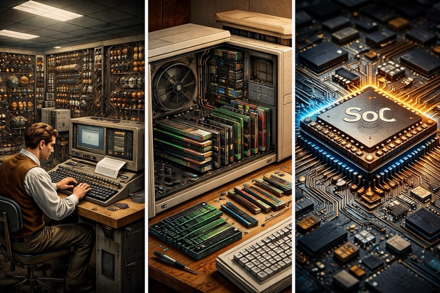
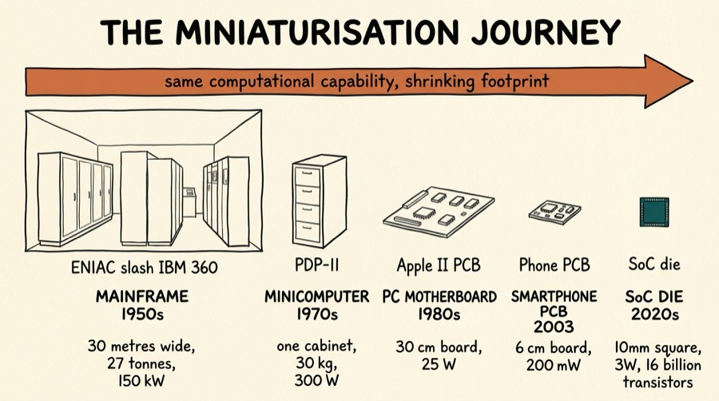
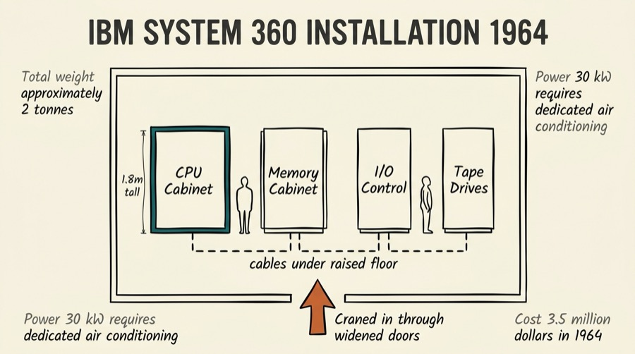
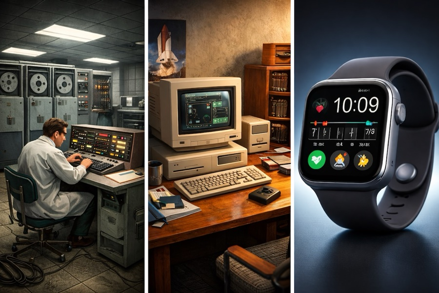
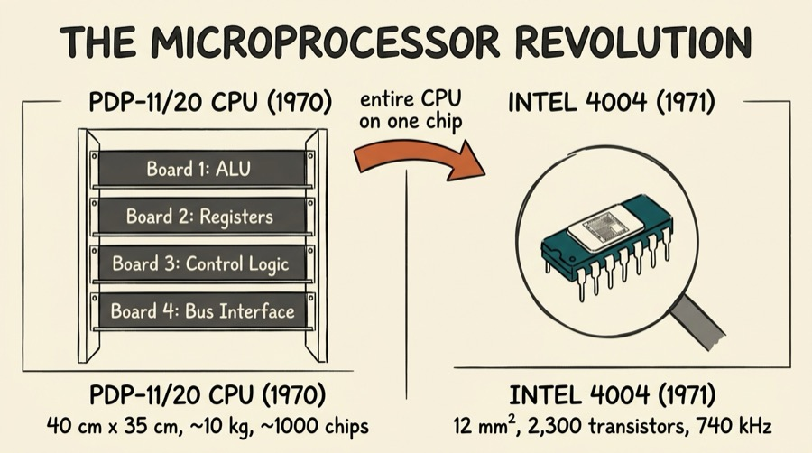
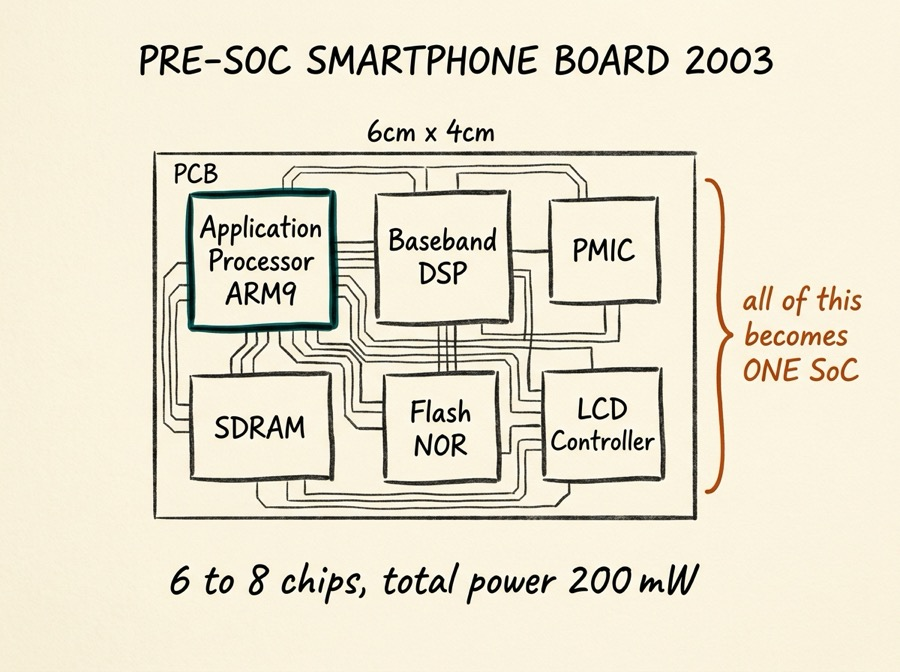
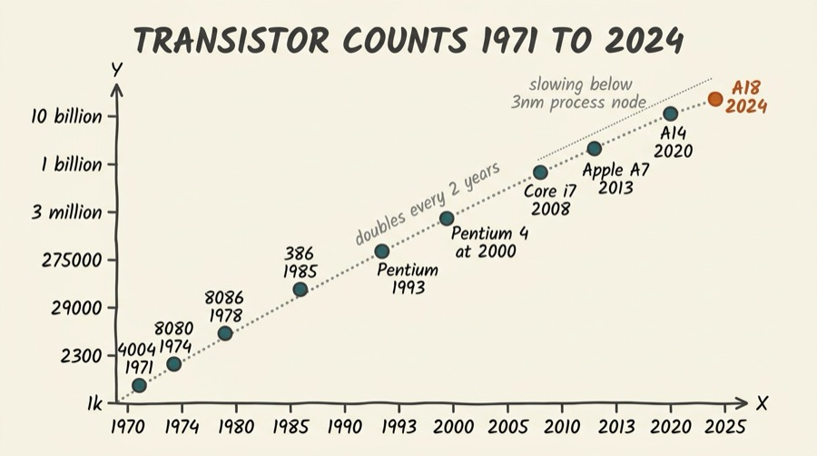

Series: Introduction to SoC Design | Article 1 of 11

Introduction
There is a photograph from 1964 that captures the scale of computing at the time. It shows two engineers installing an IBM System/360 Model 50. They are not sitting at desks. They are standing in a large, air-conditioned room, surrounded by cabinets the size of wardrobe closets, connected by thick bundles of cabling snaking under a raised false floor. The computer weighs approximately two tonnes. It required specialist riggers with cranes and fork trucks to move into the building. It draws 30 kilowatts of power — enough to heat several homes.
That machine cost around $3.5 million in 1964 dollars. It performed roughly 500,000 operations per second.
The phone in your pocket performs about 15 trillion operations per second - thirty million times more — on a sliver of silicon roughly 100 mm² in area, weighing a fraction of a gram, drawing less than three watts. It fits comfortably in a jacket pocket.
This article is the story of how we got from there to here. It is not just a history lesson. Understanding the shape of that journey — what drove miniaturisation at each step, and what trade-offs were made along the way — is essential context for understanding why modern SoC design is structured the way it is.

What is a "System"?
Before discussing a System on Chip, we should understand what the word "system" means in this context.
In engineering, a system is a collection of components that work together to perform a function greater than any single component could achieve alone. A computer system, in the classical sense, means all the hardware necessary to store, retrieve, and process information:
- processor — the arithmetic and logic engine
- Memory — where programs and data live
- Storage - where data persists when power is off
- Input/Output — keyboards, displays, printers, serial ports
- Interconnect — the buses and cables that tie it all together
- Power supply — the electrical infrastructure
For decades, each of these was a separate physical unit, often made by different vendors, assembled on a raised floor in a dedicated machine room. The history of computing is largely the story of these components shrinking, converging, and ultimately merging.
Era 1: The Room-Sized Machine (1950s–1960s)
Valves and Racks
The earliest electronic computers used vacuum tubes (valves) as their switching elements. A vacuum tube is roughly the size of a light bulb. A computer that needs hundreds of thousands of switching elements built from vacuum tubes fills a building.
ENIAC (1945) is the canonical example: 17,468 vacuum tubes, 70,000 resistors, 10,000 capacitors, filling a room 2.4 m × 1.8 m × 30 m. It consumed 150 kilowatts of power and broke down regularly — with so many valves, a failure every few hours was normal. Operators spent more time repairing it than computing with it.
The Manchester Baby (1948), while tiny by comparison, still occupied a substantial rack of equipment and required skilled operators to program it using switches and plugboards.
Approximate Physical Scale — 1950s Computer Systems
┌──────────────────────────────────────────────────────────────────┐
│ │
│ ENIAC (1945) │
│ │
│ [██████████████████████████████████████████████████████████] │ ← 30 metres
│ [█ Accumulator █][█ Multiplier █][█ Divider █][█ I/O █][█...█] │
│ │
│ Weight: ~27 tonnes Power: 150 kW Speed: 5,000 ADD/sec │
│ │
└──────────────────────────────────────────────────────────────────┘
The Transistor Changes Everything
In 1947, Bell Labs invented the transistor. It did the same job as a vacuum tube — acting as an electronic switch — but was smaller, faster, cooler, more reliable, and consumed far less power. By the late 1950s, computers began to be built from transistors instead.
IBM System/360 (1964) was a landmark: the first family of computers with a common instruction set, so that programs written for one model would run on any other. But it was still a room-scale machine. The System/360 Model 50 filled multiple cabinets, required dedicated air conditioning, and had to be craned into the computer room through specially widened doorways or lowered through the roof.
The economics were equally extreme: only universities, large corporations, government agencies, and national laboratories could afford to own one. Everyone else bought time-shares, submitting jobs on punched cards and waiting hours for results.


Era 2: The Minicomputer (1965–1975)
Thinking Small
The minicomputer was not called "mini" because it was small by today's standards. It was called mini because it was dramatically smaller than the mainframes it accompanied — small enough to fit in a single large cabinet, deliverable in a standard lift, operable without a dedicated air-conditioned room.
Digital Equipment Corporation (DEC) pioneered this category. Their PDP-8 (1965) was a 12-bit machine that cost $18,000 — expensive, but accessible to a laboratory, university department, or medium-sized company without a dedicated data centre.
The PDP-11 (1970) is one of the most important computers ever designed. It was a 16-bit machine that fit in a single rack about the size of a tall filing cabinet. It had a clean, elegant instruction set that influenced virtually every processor architecture that followed — including Unix, which was first developed on a PDP-7 and PDP-11.
DEC PDP-11 (1970) — Physical Footprint:
┌─────────────────────┐
│ ┌───────────────┐ │
│ │ Backplane │ │ ← Processor and memory cards slot in here
│ │ (UNIBUS) │ │
│ │ │ │
│ │ CPU card │ │ ← A single card, 30 cm × 25 cm
│ │ Memory cards │ │
│ │ I/O cards │ │
│ └───────────────┘ │
│ Power supply │
└─────────────────────┘
~ 60 cm × 45 cm × 60 cm
Weight: ~30 kg
Power: ~300 W
Speed: ~1 million ops/sec
Cost: ~$10,000 (1970)
The PDP-11 introduced several ideas that persist in modern SoC design: memory-mapped I/O (where peripherals appear as addresses in the memory map), a bus standard (UNIBUS), and the concept of a clean separation between the processor and the rest of the system through a well-defined bus interface.
The Minicomputer Era's Legacy
The minicomputer era produced ideas that underpin every SoC today:
- Bus standards — the UNIBUS, Multibus, and S-100 buses established the principle that components from different vendors could interoperate on a common bus
- Operating systems — Unix was born on the PDP-11; its model of processes, file descriptors, and device drivers lives on in Linux running on modern SoCs
- Modular architecture — CPU, memory, and I/O were separate cards in the same backplane, a precursor to the IP block model
Era 3: The Microprocessor (1971–1980)
Everything on One Chip
In 1971, Intel introduced the 4004 — the first microprocessor. It placed the entire CPU — arithmetic unit, registers, control logic — onto a single chip about 12 mm². It ran at 740 kHz and processed 4-bit numbers.
This was a revolutionary idea: previously, a "CPU" was a cabinet full of boards. Now it was a package you could hold between your fingers.

The 8080 (Intel, 1974), 6502 (MOS Technology, 1975), and Z80 (Zilog, 1976) followed in rapid succession. These 8-bit processors became the engines of the personal computer revolution.
The Intel 8086 (1978) and Motorola 68000 (1979) raised the bar to 16-bit, with the 68000 in particular earning a reputation for elegance and performance that made it the choice for the Apple Macintosh, the Amiga, the Atari ST, and countless workstations.
But the microprocessor alone was just the CPU. Everything else — memory, storage, I/O — was still provided by separate chips on a board. The "system" was still a board, just a smaller one.
Era 4: The Personal Computer (1977–1990)
The Desktop System
The first personal computers were kits for hobbyists. The Altair 8800 (1975) was an 8080-based machine with no keyboard, no display, and no software beyond a bootloader — users programmed it by toggling switches on the front panel.
Within a few years, Apple, Commodore, and Tandy produced complete personal computers: CPU, RAM, ROM, keyboard, display output, and storage on a single motherboard in a desktop enclosure. The Apple II (1977) sold as a complete system you could put on a desk.
Apple II Motherboard (1977) — A Complete Computer System on One Board:
┌────────────────────────────────────────────────────────────────┐
│ Apple II Motherboard │
│ │
│ [6502 CPU] [RAM chips × 8] [ROM chips × 2] [Video chip] │
│ │
│ [Keyboard encoder] [Cassette I/O] [Speaker driver] │
│ │
│ ┌────┐ ┌────┐ ┌────┐ ┌────┐ ┌────┐ ┌────┐ ┌────┐ ┌────┐ │
│ │Slot│ │Slot│ │Slot│ │Slot│ │Slot│ │Slot│ │Slot│ │Slot│ │
│ │ 1 │ │ 2 │ │ 3 │ │ 4 │ │ 5 │ │ 6 │ │ 7 │ │ 8 │ │
│ └────┘ └────┘ └────┘ └────┘ └────┘ └────┘ └────┘ └────┘ │
│ (expansion cards for disk, serial, etc.) │
│ │
│ Board size: ~30 cm × 25 cm Number of chips: ~66 │
│ System power: ~25 W Speed: 1 MHz │
└────────────────────────────────────────────────────────────────┘
The IBM PC (1981) standardised the desktop architecture that dominated computing for three decades: a processor, a chipset handling memory and I/O, expansion slots for peripherals, and a shared bus (first ISA, later PCI). By the late 1980s, a PC could sit on a desk, consume 50–200 W, and perform millions of operations per second for a few thousand dollars.
The chip count had fallen from thousands (mainframe) to hundreds (minicomputer) to dozens on a single motherboard. But a PC motherboard was still a system assembled from many chips: CPU, north bridge, south bridge, graphics chip, sound chip, network chip, storage controller, and many more.
Era 5: The Laptop — Mobile Demands Integration
Batteries Change Everything
The first truly portable computers appeared around 1981. The Grid Compass (1982) was used by NASA and the US military — it was functional but cost $8,000 and ran for barely four hours on battery. The Compaq LTE (1987) was the first laptop to use a 3.5" hard drive and internal battery in a genuinely portable form factor.
Mobile computing imposed a constraint that desktop design had never faced: batteries. A desktop computer plugged into the wall can draw as much power as needed. A laptop must run for hours on a battery with finite energy.
Power Budget — Desktop vs. Laptop (late 1980s):
Desktop PC (1988): Compaq LTE (1987):
Power: ~150 W Power: ~8 W
Battery: none Battery: NiCd, ~2 hr life
Weight: ~10 kg Weight: ~3 kg
Size: tower case Size: 28 cm × 22 cm × 4 cm
Problem: the same chips designed for desktop
drew 150 W — far too much for a battery.
A new approach to chip design was needed.
Power pressure drove two responses:
Low-voltage CMOS — designers switched from bipolar logic (powerful but power-hungry) to CMOS (Complementary Metal-Oxide-Semiconductor), which consumes power only when transistors switch, not when they are idle. This dramatically reduced both active and standby power.
Integration — every chip-to-chip interface wastes energy driving signals off-chip and back. Merging two chips into one removes those interfaces. The laptop era was the first time integration was driven primarily by power rather than just performance.
Era 6: The Mobile Phone and the ARM Architecture
An Architecture Built for Efficiency
In 1983, Acorn Computers in Cambridge designed their own processor: the Acorn RISC Machine, or ARM. It was a 32-bit RISC processor designed to be simple, low-power, and fast enough for interactive computing in an inexpensive product. The original ARM1 ran at 6 MHz and consumed a fraction of a watt — remarkable for 1985.
Acorn spun off Advanced RISC Machines Ltd in 1990 as a joint venture with Apple and VLSI Technology. Rather than manufacturing chips itself, ARM licenced its architecture to other companies — a business model that would eventually see ARM cores inside virtually every mobile device on the planet.
The first mobile phones were large, power-hungry, and limited. As GSM digital mobile telephony spread in the 1990s, phones needed to perform signal processing (decoding the radio channel), handle the telephone UI, and manage a small battery. They could afford perhaps 200 mW of sustained power.
A phone of the early 2000s had several separate chips: a baseband processor (running the radio protocols), an application processor (running the UI and apps), a power management IC, a display controller, and various analog front-ends for audio and radio. These chips communicated over a shared PCB — the "system" was a small board inside a plastic case.

This was the moment before SoC. All the pieces existed — they just were not yet on the same die.
Era 7: The System on Chip (1995–present)
Integration Crosses a Threshold
As process technology advanced through the 1990s — from 350 nm to 250 nm to 180 nm — the number of transistors that could be fabricated reliably on a single die crossed 100 million. That is enough transistors to implement not just a CPU, but everything around it: memory controllers, DSPs, display engines, USB, audio, and power management.
The Texas Instruments OMAP series (early 2000s) was among the first true smartphone SoCs: ARM application processor, DSP, camera interface, display controller, and power management all on one die. This appeared in early Nokia smartphones and PDAs.
Apple's acquisition of PA Semi in 2008 and its launch of the A4 SoC in 2010 (the first iPhone 4 chip) signalled that the world's most valuable consumer electronics company was betting everything on the SoC model. Qualcomm, Samsung, MediaTek, and HiSilicon followed with their own vertical SoC programmes.
The convergence was complete:
The Integration Journey — Same Computational Power, Shrinking Footprint:
Year System Physical Size Power Transistors
─────────────────────────────────────────────────────────────────────────
1964 IBM System/360 Model 50 2 rooms, 2 tonnes 30 kW ~500,000
1970 DEC PDP-11/20 Filing cabinet 300 W ~20,000 *
1977 Apple II (full system) Desk (30×25 cm PCB) 25 W ~100,000 *
1982 Intel 80286 CPU alone 28-pin DIP package 3 W 134,000
1993 Intel Pentium 273-pin PGA chip 15 W 3.1 M
2003 Nokia 6600 (5 chips total) PCB inside a phone 200 mW ~50 M total
2010 Apple A4 SoC 12 mm × 12 mm die ~1 W ~300 M
2020 Apple A14 SoC 88 mm² die ~3 W 11.8 B
2024 Apple A18 SoC 90 mm² die ~3 W ~16 B
─────────────────────────────────────────────────────────────────────────
* Approximate, counting discrete transistors and SSI/MSI chips
Moore's Law: The Engine of Miniaturisation
No account of this journey is complete without Moore's Law. In 1965, Gordon Moore (co-founder of Intel) observed that the number of transistors on a commercially practical integrated circuit doubled approximately every two years. This was an empirical observation about the economics of the semiconductor industry, but it became a self-fulfilling prophecy: the industry organised itself to deliver that doubling, and did so for more than fifty years.

Each doubling meant that the same design could be shrunk to half the area (reducing cost), or that twice as much logic could fit in the same area (enabling integration). Both drove the SoC story.
Moore's Law has slowed in recent years — physical limits make further miniaturisation increasingly difficult and expensive below 3 nm. The industry is responding with new techniques: 3D stacking (chips stacked vertically), chiplets (multiple dies in one package), and new materials. But the principle — relentless pressure toward more integration per unit cost — continues.
What "System" Means Now
Return to where we started: the IBM System/360, craned into a dedicated machine room, requiring a team of operators and a purpose-built building to run.
Today's SoC is a more capable system — more memory, faster clock, more peripherals, better networking — occupying an area smaller than a fingernail, drawing power measurable in milliwatts, costing a few dollars to manufacture at scale.
But it is still a system: processor, memory controller, interconnect, peripherals, power management, security hardware. The same logical building blocks exist. They have simply been reimplemented in silicon, brought together on a single die, separated by wires measured in nanometres rather than copper cables measured in metres.
Understanding that lineage — why the blocks exist, what problems they solve, where the trade-offs come from — is the context for everything that follows in this series.
Summary
Computer systems began as room-filling collections of vacuum tubes. The transistor enabled the minicomputer — a cabinet-scale machine accessible to laboratories and companies. The microprocessor collapsed the CPU onto a single chip and made the personal computer possible. Mobile computing added battery constraints that drove integration for power efficiency. The System on Chip emerged when transistor densities crossed the threshold that made fitting an entire system — CPU, memory, peripherals, and more — onto a single die both technically feasible and economically compelling. Moore's Law underpinned the entire journey, doubling integration density roughly every two years for five decades.
Series Roadmap
Next: Article 02 -- What is a System on Chip? Anatomy and Motivation